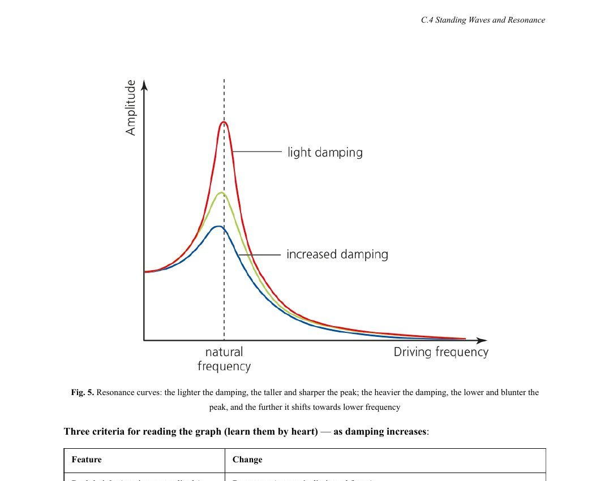
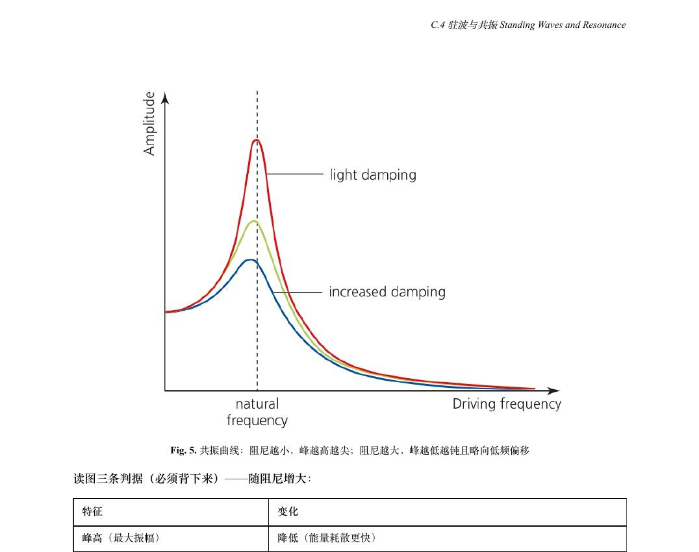

01 / BILINGUAL LECTURES
中英双语讲义与质量检查


覆盖范围
AP Physics 2、AP Physics C: E&M、CIE A2 Topic 12–25、IB 2025 新考纲 Theme A–E，共 50 多个单元，每个单元都有中英文两版。
怎么做出来的
自己搭了 13 个 AI 教研工具，覆盖写讲义、做课件、真题切题与录入、考官报告整理、学情反馈等环节，用它批量生产，再人工检查。
怎么保证质量
定了一套 9 个方面的检查标准：考点有没有漏、题型全不全、考官报告引用对不对、例题数字有没有算错、中英文是否一致等。已检查 11 批讲义，问题按轻重分级修改。